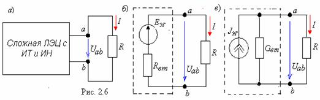

Теорема об эквивалентном генераторе гласит:
любую сложную линейную электрическую цепь с произвольным числом источников напряжения и источников тока (рис. 2.6, а) можно заменить простой схемой, состоящей: а) либо из эквивалентного генератора с ЭДС ЕЭГ и последовательно соединенного с ним резистора с (внутренним) сопротивлением Rвт (рис. 2.6. б), б) либо из источника тока JЭГ и параллельно соединённого с ним резистора с проводимостью Gвт (рис. 6.2, в) ; при этом три схемы рис. 2.6 оказываются идентичными по отношению к выходным выводам a и b , к которым подклюючена нагрузка R .

Теорема об эквивалентном генераторе применима только к линейным электрическим цепям.
|